本页展示实际运行时，不是新的概念海报。主录屏使用真实时间；流程截图为测试时钟推进后的状态。视觉自然度与完成度仍由用户审核，手机真机尚未测试；本轮不合并、不部署。
先看连续运动
约 42 秒完整连续运行，三轮绕轨、机器人自主循环、12 秒收据与 36 秒拆封鼠两次发现。没有快进、没有冻结、没有脚本点击。声音接口已预留，目前无音轨。
12 秒同源节选（9.5–21.5 秒） · 连续片段联系表
五页统一视觉 · 390×844
这是正常规则推进约 3 分钟后的现场，不是新手零进度。PNG 精确 390×844，点击可查看 2×细节。
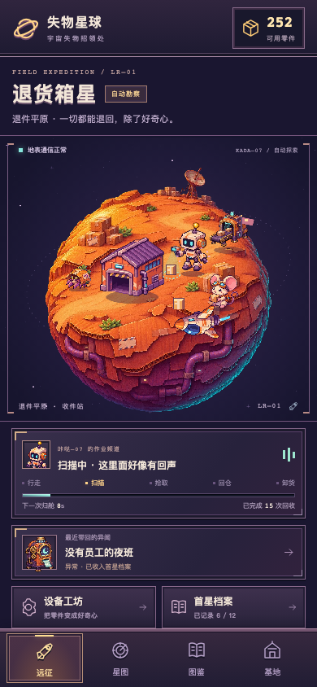
远征 · 八姿势主角、完整球体与地表分层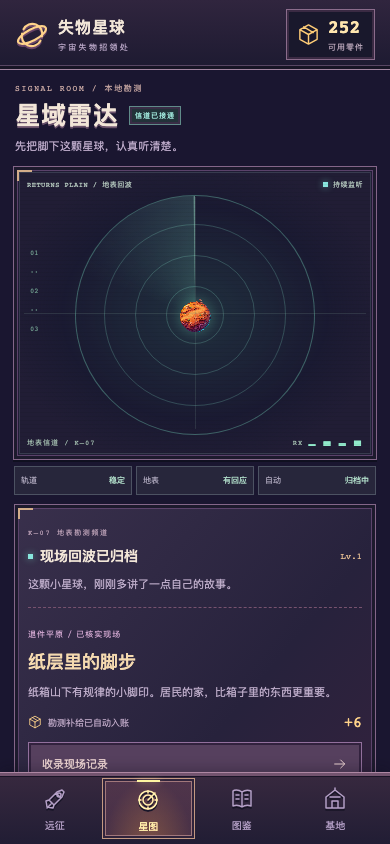
雷达 · 真实现场勘测，没有不可玩的目的地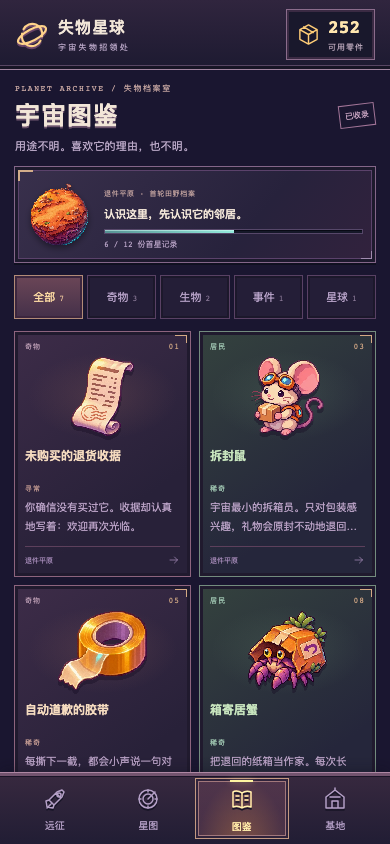
图鉴 · 分类、藏品与田野记录基地 · 藏品、活动机器人与居民反馈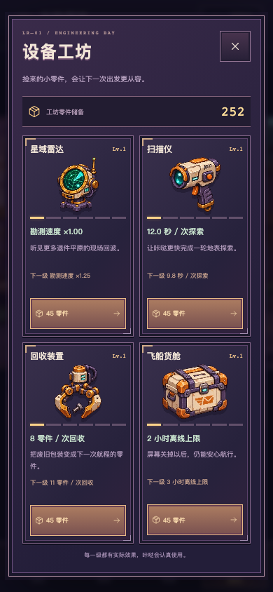
工坊 · 设备插画、等级槽、真实效果与费用发现的瞬间
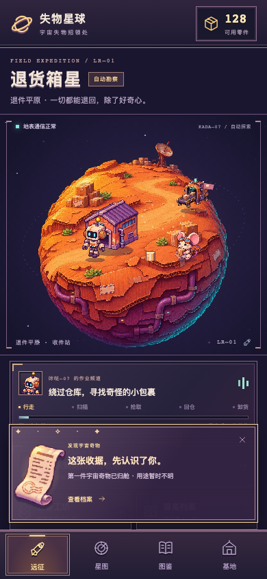
奇物 · 真实时间录制时捕获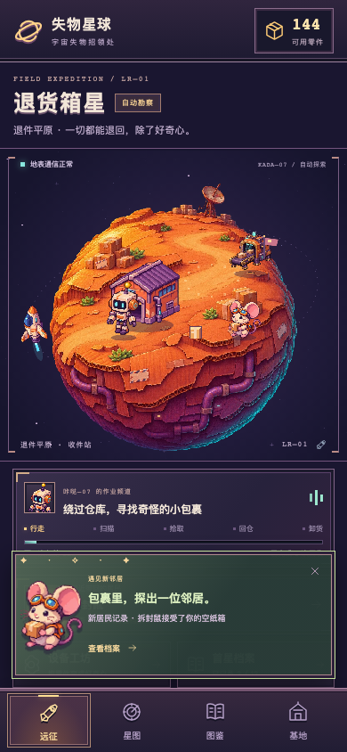
居民 · 真实时间录制时捕获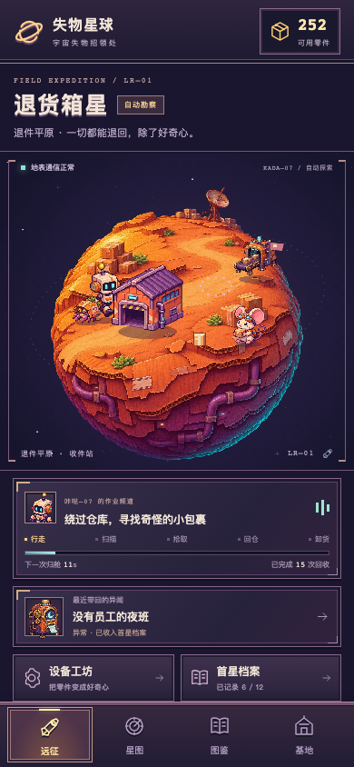
异闻 · 测试时钟推进至真实事件里程碑遮挡、扫描与卸货
以下只冻结视觉时钟与对应 HUD，不改变存档或奖励。请结合上方连续视频判断切换是否自然。
球背完全遮挡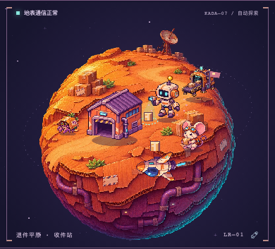
前轨正确出现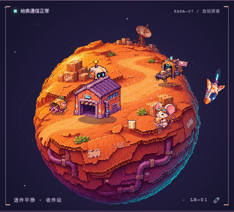
后侧路线，保留头部可读性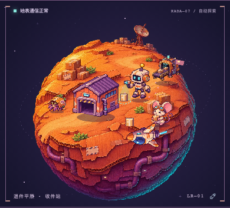
独立扫描姿势与地表光圈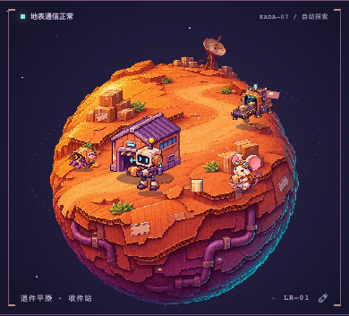
门口递交，不穿过地基
首星完整闭环
后期静态图使用测试时钟推进规则。离线清单在独立新存档中模拟长时间离开，仍执行实际限额与结算逻辑。
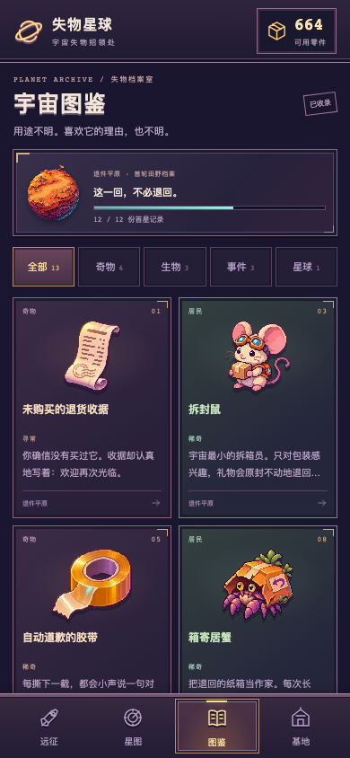
6 奇物 / 3 生物 / 3 事件六个独立展柜与三位居民独特立绘、背景关系与轻互动离线归航 · 限额与防双领对照原始参考与上轮切片
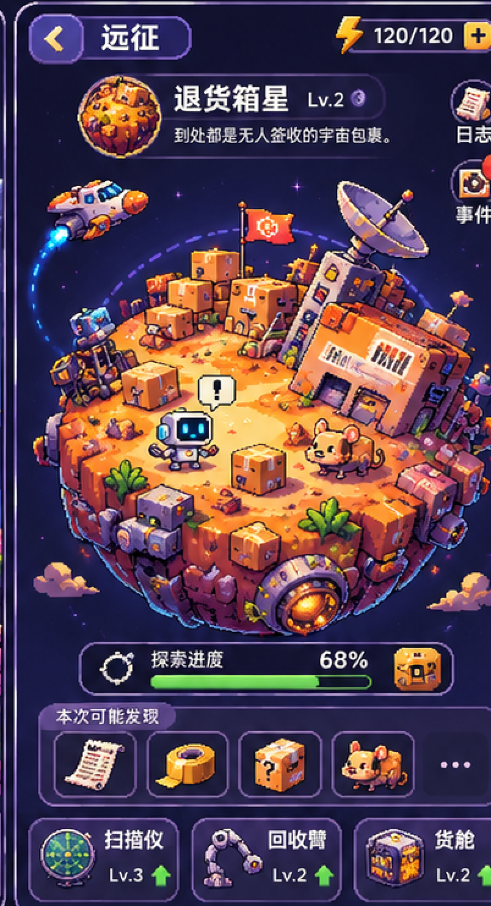
原概念方向。属于参考拼版，不是生产分层。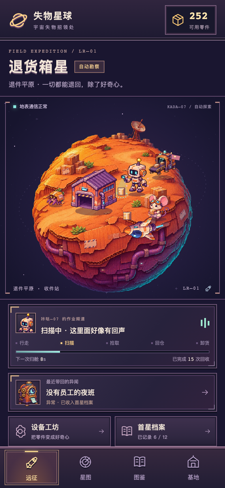
当前实际运行。完整球体、独立动作与统一 UI。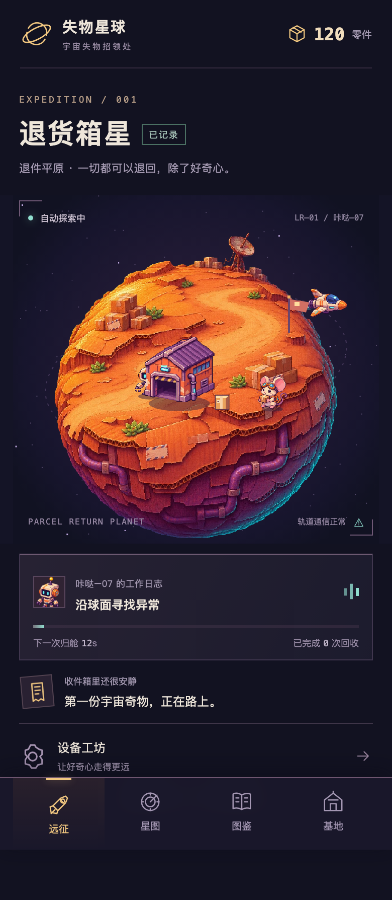
上轮开局切片，角色较小；仅用于构图与可读性对照，进度与当前截图不同。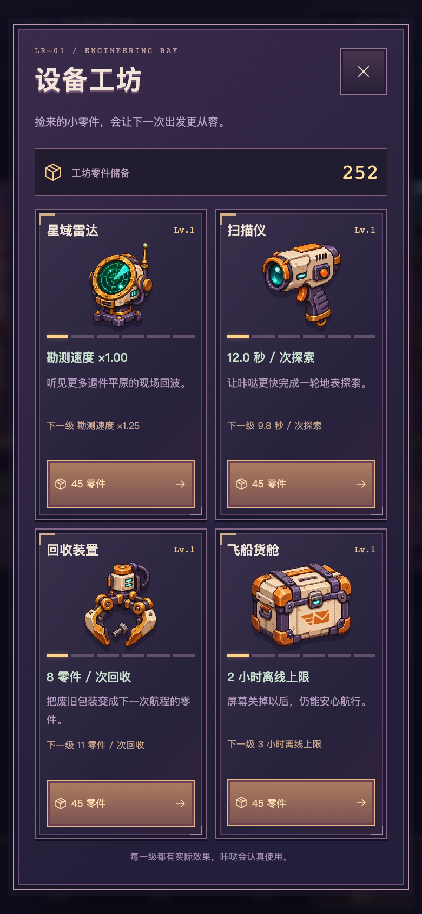
当前四设备系统，像素插画与真实升级反馈。验证与待审核
- 18 项规则/运动/存储测试，32 项浏览器流程。引擎与存储的行/分支覆盖 100%，不代表全部 UI/渲染。
- 360×800 / 390×844 / 桌面 Chromium、390×844 WebKit；真实性能与资源数据见报告和 JSON。
- 机器人姿态一致性、递交手部接触、飞船单视角精灵姿态、最小辅助文字与真机发热仍可继续细磨。
- 首星由用户确认达标后，再考虑阶段二；本轮没有量产后续星球。